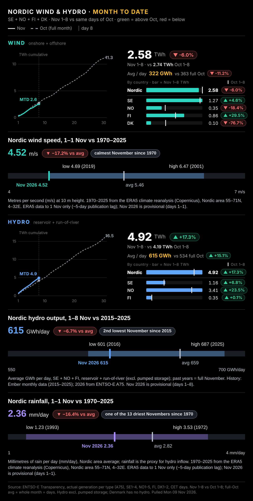

MARKET PULSE Asia's chip markets bounce as Nvidia wobbles Mon 9 Nov 2026 · new since the Sunday look-ahead (Sun 20:28) · Fri 6 Nov close already covered · Zurich time | | IN THIS BRIEF 1 Asia & overnight · 2 Nordic power · 3 Top 5 reads · 4 News · 5 Calendar | • Asia's chip markets clawed back a good part of Friday's rout. Taiwan and Tokyo led, while Hong Kong, Korea and mainland China barely moved, so the relief sits in the AI supply chain rather than across the region. US futures edged up. • Nvidia is the overhang. A probe and allegations around its chief executive pushed the shares lower in after-hours and perpetual trade, which leaves the Asian bounce exposed when New York opens. • Oil shrugged off the latest Houthi strikes, which left minor damage at a Saudi Aramco office in Riyadh. Gold firmed as softer crude eased inflation worries, and China's October inflation edged lower on weak demand. • Nordic power jumped into the working week, with the southern zones again pricing off the continent and Finland still cheap. Tuesday's US CPI is the week's main test for the rate-hike bets that followed payrolls. | 1 · Asia & overnight Taiwan and Tokyo lead a chip-led rebound | | Nikkei 225 | 59,213 | +3.1% | Mon 05:25 | | Taiex | 42,024 | +5.8% | Mon 05:20 |
Material moves only (Asia ≥1%, equity futures ≥0.7%, oil ≥1.5%, FX ≥0.3–0.5%), markets that traded after the last brief. Little changed: Hang Seng +0.2% · Kospi +0.2% · ASX 200 +0.2% · Shanghai Comp. +0.5% · S&P 500 fut. +0.6% · Nasdaq 100 fut. +0.5% · Brent Jan-27 +0.0% · WTI Dec-26 +0.5% · EUR/USD +0.2% · USD/JPY −0.1% · EUR/CHF +0.2%. Time = last quote, Zurich. Yahoo Finance. | Our view. This is a relief bounce in the markets hit hardest last week, not a verdict on the AI trade. Breadth across Asia is thin and Nvidia is softer overnight, so Europe's open and the US cash session matter more than Tokyo's close. A second day of chip gains with US futures following would say Friday's flush has run its course. | 2 · Prices, wind and hydro Southern zones jump again while Finland stays cheap | | Daily average day-ahead price, EUR/MWh, delivery Mon 9 Nov vs Sun 8 Nov. | | Area | Mon 9 | Sun 8 | Chg | Oct avg | Nov 1–7 | | SYS | 123.0 | 95.9 | +28% | 88.2 | 126.4 | | SE3 | 249.8 | 166.1 | +50% | 73.6 | 154.4 | | SE4 | 389.7 | 270.5 | +44% | 140.6 | 272.3 | | DK1 | 348.6 | 243.5 | +43% | 159.9 | 258.5 | | DK2 | 372.3 | 261.6 | +42% | 163.0 | 273.4 | | NO1 | 232.1 | 175.8 | +32% | 132.1 | 182.2 | | NO2 | 247.5 | 197.9 | +25% | 140.4 | 207.9 | | NO3 | 127.2 | 87.7 | +45% | 92.0 | 99.5 | | NO5 | 233.4 | 178.5 | +31% | 126.9 | 181.0 | | FI | 15.0 | 9.9 | +52% | 38.0 | 61.6 |
|  | Our view. The jump is a weekday and low-wind effect on top of an already tight south. November wind is running below the same days of October while hydro is higher, which keeps the north cheaper and ties the south to continental gas into winter. | 3 · Top 5 reads Worth your time | John Authers · Bloomberg Opinion · 2026-11-09 The third correction in Trump 2.0 years Last week's sell-off was narrow: tech and energy took the hit while most S&P sectors gained, and the column reads it as the third Trump-era correction, driven by midterm fears that local opposition will slow data-centre building and that the Iran war is closer to ending. With Nasdaq 100 forward valuations back near their Covid-era lows, a falling jobless rate and the Fed out of the cutting business, it sees the drop as a possible opportunity unless the political risks prove deeper. Why it matters. Ties the AI and oil sell-offs to the same political shift, ahead of Tuesday's US CPI. AI & tech · Reuters · Mon 00:06 Geopolitics · FT News · Mon 03:01 Weak domestic demand weighs on prices in world’s second-largest economy even as higher energy prices drive up costs for producers | 4 · News by topic Today's news | | 5 · Calendar Week ahead | | When (Zurich) | What | | Mon 9 Nov 02:30 | ● KEY · Data
China CPI and PPI (October), 9:30 Beijing | | Tue 10 Nov 00:50 | ● KEY · Central bank
BoJ Summary of Opinions, 29–30 Oct meeting (08:50 Tokyo) | | Tue 10 Nov 09:30 | ● KEY · Central bank
Riksbank minutes of the 3 Nov meeting | | Tue 10 Nov 14:30 | ● KEY · Data
US October CPI | | Tue 10 Nov | Energy
EIA Short-Term Energy Outlook (November) | | Wed 11 Nov | ● KEY · Energy
OPEC Monthly Oil Market Report (November) | | Thu 12 Nov 08:00 | ● KEY · Data
UK GDP: Q3 first estimate + September monthly (ONS, 07:00 UK) | | Thu 12 Nov 18:00 | Energy
EIA weekly petroleum status report (moved to Thursday for Veterans Day, 12:00 ET) | | Fri 13 Nov 11:00 | ● KEY · Data
Euro-area Q3 GDP and employment flash | | Fri 13 Nov 14:30 | Data
US October PPI | | Fri 13 Nov | Energy
IEA Oil Market Report (November) | | Mon 16 Nov 03:00 | Data
China industrial output, retail sales, fixed-asset investment (October), 10:00 Beijing |
● KEY = market-moving: central-bank decisions, CPI/PCE/GDP/jobs, budgets, OPEC | | Sources: Yahoo Finance, CNBC, Investing.com, FRED (St. Louis Fed), Eurostat, ONS/OECD, SFSO, Statistics Japan, US EIA, GIE AGSI+ via the markets-monitor feed, Wikipedia (S&P 500 members), iShares (STOXX Europe 600 holdings, EXSA), Nord Pool, ENTSO-E, FT (RSS + myFT Daily Digest), Google News (trusted outlets), curated calendar. Views are our house view: market commentary, not investment advice. No data gaps. Built Mon 09 Nov 2026 05:41 Zurich. |
|